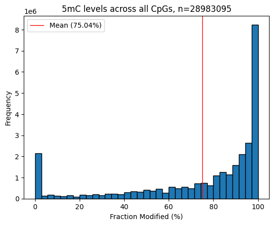
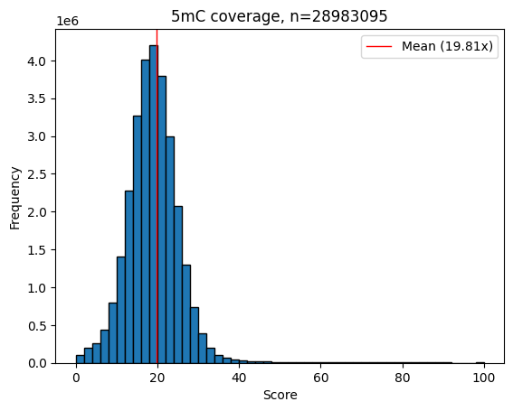

Test Dataset (Work in Progress)#
Placeholder for when all 20 nanopore samples have been sequenced and aligned and modcalled. We will put them here and merge with main dataset.
Converting unaligned CRAM to FASTQ for Minimap2 aligment:
samtools bam2fq -@ 32 -T 1 --reference ./ref/hg38.fna cram/uf_hembank_${ID}.pass.cram | \ minimap2 -y -t 32 -ax lr:hq ref/hg38.fna - > sam/uf_hembank_${ID}.sam
Converting SAM to BAM, sorting, and indexing:
samtools view -@ 32 -bS sam/uf_hembank_${ID}.sam | \ samtools sort -@ 32 - --write-index -o bam/uf_hembank_${ID}.bam -O BAM --reference ref/hg38.fna
Creating a BedMethyl file with Modkit
modkit pileup bam/uf_hembank_${ID}.bam bed/uf_hembank_${ID}.bed -t 32 --combine-strands --cpg --ignore h --ref ref/hg38.fna
Where data at?#
import pandas as pd
import glob
# Get a list of all CSV files in the directory
file_list = glob.glob('../../pacmap/*.csv')
# Create an empty list to store the dataframes
dfs = []
# Read each CSV file and append it to the list
for file in file_list:
df = pd.read_csv(file, index_col=0)
dfs.append(df)
# Concatenate all dataframes in the list
df = pd.concat(dfs)
df
| cg00000109 | cg00000236 | cg00000292 | cg00000363 | cg00000622 | cg00000658 | cg00000714 | cg00000721 | cg00000734 | cg00000769 | ... | cg21278787 | cg22708233 | cg23138682 | cg23282051 | cg24677744 | cg25023752 | cg26185531 | cg26293201 | cg26576875 | cg07148304 | |
|---|---|---|---|---|---|---|---|---|---|---|---|---|---|---|---|---|---|---|---|---|---|
| uf_hembank_1852 | 1.000 | 0.913 | 0.615 | 0.174 | 0.0 | 0.964 | 0.250 | 1.000 | 0.0 | 0.0 | ... | NaN | NaN | NaN | NaN | NaN | NaN | NaN | NaN | NaN | NaN |
| uf_hembank_1831 | 1.000 | 0.800 | 0.786 | 0.143 | 0.0 | 0.933 | 0.250 | 0.933 | 0.0 | 0.0 | ... | NaN | NaN | NaN | NaN | NaN | NaN | NaN | NaN | NaN | NaN |
| uf_hembank_1829 | 0.889 | 0.632 | 0.750 | 0.000 | 0.0 | 1.000 | 0.100 | 1.000 | 0.0 | 0.0 | ... | 0.0 | 0.0 | 0.0 | 0.0 | 0.0 | 0.0 | 0.25 | 0.0 | 0.0 | NaN |
| uf_hembank_1830 | 0.960 | 0.500 | 0.615 | 0.294 | 0.0 | 1.000 | 0.000 | 1.000 | 0.0 | 0.0 | ... | 0.0 | 0.0 | 0.0 | 0.0 | 0.0 | 0.0 | 0.00 | 0.0 | 0.0 | 0.0 |
| uf_hembank_1832 | 1.000 | 1.000 | 0.800 | 0.000 | 0.0 | 1.000 | 0.000 | 1.000 | 0.0 | NaN | ... | NaN | 0.0 | NaN | NaN | NaN | NaN | NaN | NaN | NaN | NaN |
| uf_hembank_1841 | 0.714 | 0.900 | 0.667 | 0.000 | 0.0 | 0.923 | 0.091 | 0.929 | 0.0 | 0.0 | ... | NaN | NaN | 0.0 | 0.0 | 0.0 | 0.0 | 0.00 | 0.0 | 0.0 | NaN |
6 rows × 331963 columns
Show code cell source
import pandas as pd
# mount = '/mnt/e/'
# input_path = mount + 'nanopore_processed/'
# sample_name = 'uf_hembank_1852'
Create BED6 file to harmonize probes from EPIC array with nanopore#
Show code cell source
# # read df_discovery and df_validation
# df_discovery = pd.read_pickle(mount+'MethylScore_v2/Intermediate_Files/'+'3308samples_333059cpgs_withbatchcorrection_bvalues.pkl').sort_index().iloc[:,1:]
# array_reference = pd.read_csv("/mnt/c/Users/fmarc/OneDrive/Desktop/nanopore_processed/ref/EPIC.anno.GRCh38.tsv.gz", sep='\t', compression='gzip',
# usecols=['chrm','start','end','orientation', 'probeID']
# ).set_index('probeID').sort_index()
# pacmap_reference = array_reference.loc[df_discovery.columns].reset_index()
# # change values in `orientation` column to match the orientation of the probes in the discovery dataset
# pacmap_reference['orientation'] = pacmap_reference['orientation'].map({'down': '-', 'up': '+'})
# pacmap_reference['score'] = 0
# # Rename `IlmnID` to `name` to follow BED standard
# pacmap_reference = pacmap_reference.rename(columns={'IlmnID': 'name', 'orientation': 'strand'})
# # Order columns
# pacmap_reference = pacmap_reference[['chrm', 'start', 'end', 'name', 'score', 'strand', ]]
# # Sort by `chrm` and `start`
# pacmap_reference = pacmap_reference.sort_values(by=['chrm', 'start'])
# pacmap_reference.to_csv('../data/pacmap_reference.bed', sep='\t', index=False, header=False)
pacmap_reference = pd.read_csv('../data/pacmap_reference.bed', sep='\t', header=None, names=['chrm', 'start', 'end', 'name', 'score', 'strand'])
pacmap_reference
| chrm | start | end | name | score | strand | |
|---|---|---|---|---|---|---|
| 0 | chr1 | 69590 | 69592 | cg21870274 | 0 | + |
| 1 | chr1 | 864702 | 864704 | cg08258224 | 0 | - |
| 2 | chr1 | 870160 | 870162 | cg16619049 | 0 | - |
| 3 | chr1 | 877158 | 877160 | cg18147296 | 0 | - |
| 4 | chr1 | 898802 | 898804 | cg13938959 | 0 | + |
| ... | ... | ... | ... | ... | ... | ... |
| 333053 | chr9 | 138119084 | 138119086 | cg00378292 | 0 | + |
| 333054 | chr9 | 138120221 | 138120223 | cg07982825 | 0 | - |
| 333055 | chr9 | 138122338 | 138122340 | cg14491707 | 0 | + |
| 333056 | chr9 | 138122548 | 138122550 | cg13811936 | 0 | - |
| 333057 | chr9 | 138123004 | 138123006 | cg14022794 | 0 | + |
333058 rows × 6 columns
Load modkit processed file#
Show code cell source
# Read the input data, skipping the first row if it's a header or irrelevant
df = pd.read_csv(input_path + 'bed/'+ sample_name+'.bed',
sep='\s+',
names=["chrom", "start_position","end_position","modified base code","score",
'strand' ,"start position","end position", "color", "Nvalid_cov",
"fraction modified", "Nmod", "Ncanonical", "Nother_mod", "Ndelete",
"Nfail", "Ndiff", "Nnocall"])
df
| chrom | start_position | end_position | modified base code | score | strand | start position | end position | color | Nvalid_cov | fraction modified | Nmod | Ncanonical | Nother_mod | Ndelete | Nfail | Ndiff | Nnocall | |
|---|---|---|---|---|---|---|---|---|---|---|---|---|---|---|---|---|---|---|
| 0 | chr1 | 10468 | 10469 | m | 1 | . | 10468 | 10469 | 255,0,0 | 1 | 0.00 | 0 | 1 | 0 | 0 | 0 | 0 | 0 |
| 1 | chr1 | 10470 | 10471 | m | 1 | . | 10470 | 10471 | 255,0,0 | 1 | 100.00 | 1 | 0 | 0 | 0 | 0 | 0 | 0 |
| 2 | chr1 | 10483 | 10484 | m | 1 | . | 10483 | 10484 | 255,0,0 | 1 | 100.00 | 1 | 0 | 0 | 0 | 0 | 0 | 0 |
| 3 | chr1 | 10488 | 10489 | m | 1 | . | 10488 | 10489 | 255,0,0 | 1 | 100.00 | 1 | 0 | 0 | 0 | 0 | 0 | 0 |
| 4 | chr1 | 10492 | 10493 | m | 1 | . | 10492 | 10493 | 255,0,0 | 1 | 100.00 | 1 | 0 | 0 | 0 | 0 | 0 | 0 |
| ... | ... | ... | ... | ... | ... | ... | ... | ... | ... | ... | ... | ... | ... | ... | ... | ... | ... | ... |
| 28983090 | chrUn_GL000218v1 | 160573 | 160574 | m | 32 | . | 160573 | 160574 | 255,0,0 | 32 | 15.62 | 5 | 27 | 0 | 0 | 1 | 0 | 0 |
| 28983091 | chrUn_GL000218v1 | 160611 | 160612 | m | 34 | . | 160611 | 160612 | 255,0,0 | 34 | 61.76 | 21 | 13 | 0 | 0 | 0 | 0 | 0 |
| 28983092 | chrUn_GL000218v1 | 160669 | 160670 | m | 25 | . | 160669 | 160670 | 255,0,0 | 25 | 52.00 | 13 | 12 | 0 | 0 | 1 | 5 | 0 |
| 28983093 | chrUn_GL000218v1 | 160790 | 160791 | m | 24 | . | 160790 | 160791 | 255,0,0 | 24 | 66.67 | 16 | 8 | 0 | 0 | 0 | 0 | 0 |
| 28983094 | chrUn_GL000218v1 | 160914 | 160915 | m | 19 | . | 160914 | 160915 | 255,0,0 | 19 | 21.05 | 4 | 15 | 0 | 0 | 0 | 1 | 0 |
28983095 rows × 18 columns
Plot distributions#
Show code cell source
import matplotlib.pyplot as plt
# Create histogram for fraction_modified
plt.hist(df['fraction modified'], bins=35, edgecolor='black')
plt.title('5mC levels across all CpGs, n=' + str(df.shape[0]))
plt.xlabel('Fraction Modified (%)')
plt.ylabel('Frequency')
# add a vertical line at the mean
plt.axvline(df['fraction modified'].mean(), color='red',
linewidth=1, label='Mean ('+ str(round(df['fraction modified'].mean(), 2)) + '%)')
plt.legend()
plt.show()

Show code cell source
# create histogram of `score` for both 5mC and 5hmC, ignoring outliers
plt.hist(df['score'], bins=50, edgecolor='black', range=(0, 100))
plt.title('5mC coverage, n=' + str(df.shape[0]))
plt.xlabel('Score')
plt.ylabel('Frequency')
# add mean line
plt.axvline(df['score'].mean(), color='red', linewidth=1, label='Mean ('+ str(round(df['score'].mean(), 2)) + 'x)')
plt.legend()
plt.show()

Index genomic coordinates for both files#
Show code cell source
# Create 'coordinate' column for merging
df['coordinate'] = df['chrom'].astype(str) + ':' + df['start_position'].astype(str)
df_filtered = df[df['modified base code'].isin(['m'])].set_index('coordinate')
pacmap_reference['coordinate'] = pacmap_reference['chrm'].astype(str) + ':' + pacmap_reference['start'].astype(str)
pacmap_reference = pacmap_reference.set_index('coordinate')
df_merged = pacmap_reference[['name']].join(df_filtered, how='inner')
# Transform the fraction modified into beta values
df_merged.loc[:, sample_name] = (df_merged['fraction modified'] / 100).round(3)
df_merged
| name | chrom | start_position | end_position | modified base code | score | strand | start position | end position | color | Nvalid_cov | fraction modified | Nmod | Ncanonical | Nother_mod | Ndelete | Nfail | Ndiff | Nnocall | uf_hembank_1852 | |
|---|---|---|---|---|---|---|---|---|---|---|---|---|---|---|---|---|---|---|---|---|
| coordinate | ||||||||||||||||||||
| chr10:100008150 | cg19212550 | chr10 | 100008150 | 100008151 | m | 11 | . | 100008150 | 100008151 | 255,0,0 | 11 | 63.64 | 7 | 4 | 0 | 0 | 1 | 0 | 0 | 0.636 |
| chr10:100008943 | cg14405603 | chr10 | 100008943 | 100008944 | m | 13 | . | 100008943 | 100008944 | 255,0,0 | 13 | 38.46 | 5 | 8 | 0 | 0 | 1 | 0 | 0 | 0.385 |
| chr10:100009525 | cg18561930 | chr10 | 100009525 | 100009526 | m | 10 | . | 100009525 | 100009526 | 255,0,0 | 10 | 0.00 | 0 | 10 | 0 | 0 | 3 | 0 | 0 | 0.000 |
| chr10:100010213 | cg16423650 | chr10 | 100010213 | 100010214 | m | 11 | . | 100010213 | 100010214 | 255,0,0 | 11 | 0.00 | 0 | 11 | 0 | 0 | 1 | 0 | 0 | 0.000 |
| chr10:100010332 | cg27096759 | chr10 | 100010332 | 100010333 | m | 12 | . | 100010332 | 100010333 | 255,0,0 | 12 | 0.00 | 0 | 12 | 0 | 0 | 0 | 0 | 0 | 0.000 |
| ... | ... | ... | ... | ... | ... | ... | ... | ... | ... | ... | ... | ... | ... | ... | ... | ... | ... | ... | ... | ... |
| chr9:99907189 | cg22304376 | chr9 | 99907189 | 99907190 | m | 20 | . | 99907189 | 99907190 | 255,0,0 | 20 | 0.00 | 0 | 20 | 0 | 0 | 5 | 0 | 0 | 0.000 |
| chr9:99907330 | cg14153061 | chr9 | 99907330 | 99907331 | m | 21 | . | 99907330 | 99907331 | 255,0,0 | 21 | 4.76 | 1 | 20 | 0 | 0 | 4 | 0 | 0 | 0.048 |
| chr9:99909385 | cg13422870 | chr9 | 99909385 | 99909386 | m | 23 | . | 99909385 | 99909386 | 255,0,0 | 23 | 69.57 | 16 | 7 | 0 | 0 | 0 | 0 | 0 | 0.696 |
| chr9:99967624 | cg14233861 | chr9 | 99967624 | 99967625 | m | 21 | . | 99967624 | 99967625 | 255,0,0 | 21 | 100.00 | 21 | 0 | 0 | 0 | 0 | 0 | 0 | 1.000 |
| chr9:99998980 | cg05469304 | chr9 | 99998980 | 99998981 | m | 15 | . | 99998980 | 99998981 | 255,0,0 | 15 | 100.00 | 15 | 0 | 0 | 0 | 0 | 0 | 0 | 1.000 |
331886 rows × 20 columns
Adjust to fit PaCMAP input format#
Show code cell source
# Calculate the fraction modified and prepare the final DataFrame
df_merged.loc[:, sample_name] = (df_merged['fraction modified'] / 100).round(3)
df_processed = df_merged[['name', sample_name]].set_index('name').T
# sort columns
df_processed = df_processed.sort_index(axis=1)
df_processed
| name | cg00000109 | cg00000236 | cg00000292 | cg00000363 | cg00000622 | cg00000658 | cg00000714 | cg00000721 | cg00000734 | cg00000769 | ... | cg27665648 | cg27665659 | cg27665715 | cg27665767 | cg27665769 | cg27665860 | cg27665925 | cg27665985 | cg27666046 | cg27666123 |
|---|---|---|---|---|---|---|---|---|---|---|---|---|---|---|---|---|---|---|---|---|---|
| uf_hembank_1852 | 1.0 | 0.913 | 0.615 | 0.174 | 0.0 | 0.964 | 0.25 | 1.0 | 0.0 | 0.0 | ... | 1.0 | 0.056 | 1.0 | 0.571 | 0.0 | 0.923 | 0.0 | 0.5 | 0.188 | 0.875 |
1 rows × 331886 columns
Save results#
Show code cell source
output_path = input_path + 'pacmap/' + sample_name + '_pacmap_bvalues.pkl'
# Save the final DataFrame
df_processed.to_pickle(output_path)
# Print path to the final DataFrame
print(output_path)
/mnt/e/nanopore_processed/pacmap/uf_hembank_1852_pacmap_bvalues.pkl
Appendix 1. Retrospective lower coverage analysis#
samtools view -@ 32 -bh -s ${subsampling_fraction} bam/uf_hembank_${ID}.bam > bam/subsampled_${ID}_01x.bam